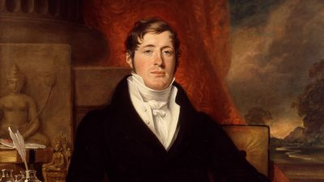
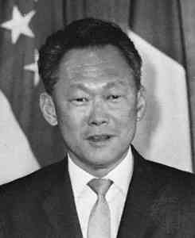

Singapura adalah peranan yang kecil di dalam perkembangan sejarah Asia Tenggara sampai Sir Stamford Raffles mendirikan sebuah pelabuhan Inggris di situ. Di bawah pemerintahan kolonial Inggris, Singapura telah berubah menjadi pelabuhan yang amat strategis mengingat letaknya yang ada di tengah-tengah jalur perdagangan di antara India dan Cina yang akhirnya menjadi antara pelabuhan yang terpenting di dunia sampai hari ini. Semasa Perang Dunia II, Singapura telah diduduki oleh tentara Jepang dari tahun 1942 hingga tahun 1945.
Selepas perang, penduduk setempat dibenarkan menjalankan pemerintahan sendiri tetapi masih belum mencapai kemerdekaan. Seterusnya pada tahun 1963 Singapura telah bergabung dengan Tanah Melayu bersama-sama dengan Sabah dan Sarawak untuk membentuk Malaysia. Namun, Singapura dikeluarkan dari Malaysia dan menjadi sebuah republik pada 9 Agustus 1965.
Klik link ini untuk langsung ke bagiannya
Temasek | Era Kolonial Inggris | Syonan-to | Kemerdekaan dan Modernisasi
Faktanya Bisa dipencet sebelah sini
Singapura dulunya dikenal sebagai Temasek (Kota Laut). Menurut legenda Melayu, seorang pangeran dari Sriwijaya bernama Sang Nila Utama terdampar di pulau ini. Saat berburu, ia melihat seekor hewan asing yang ia yakini sebagai singa. Ia kemudian menamai pulau ini "Singapura" (berasal dari bahasa Sanskerta yang berarti "Kota Singa").

Sejarah modern Singapura dimulai ketika Sir Thomas Stamford Raffles tiba dan menyadari potensi strategis pulau ini. Ia mendirikan pos perdagangan East India Company (EIC). Kebijakan perdagangan bebas yang diterapkannya menarik pedagang dari Tiongkok, India, dan kepulauan Melayu, mengubah Singapura menjadi pelabuhan yang sangat sibuk.
Pada masa Perang Dunia II, tentara Jepang berhasil menaklukkan Singapura dari tangan Inggris. Pulau ini kemudian diganti namanya menjadi "Syonan-to" yang berarti "Cahaya Selatan". Ini adalah masa-masa kelam yang penuh penderitaan bagi penduduk lokal, hingga akhirnya Jepang menyerah pada tahun 1945.

Setelah sempat bergabung dengan Federasi Malaysia pada 1963, perbedaan ideologi menyebabkan Singapura memisahkan diri dan menjadi negara republik yang merdeka dan berdaulat pada 9 Agustus 1965. Di bawah kepemimpinan Perdana Menteri pertama, Lee Kuan Yew, Singapura bertransformasi secara agresif dari negara miskin sumber daya menjadi raksasa ekonomi dunia.
Bendera Singapura terdiri dari dua bagian mendatar yang terbagi menjadi dua warna, merah dan putih. Sepintas, bendera Singapura mirip dengan bendera Indonesia. Namun, bendera Singapura memiliki bulan sabit putih dan lima bintang putih di bagian sisi merah di kiri atas bendera.
Warna merah bendera Singapura melambangkan persaudaraan universal dan kesetaraan manusia. Sedangkan putih melambangkan kemurnian dan kebajikan abadi. Bulan sabit menggambarkan negara yang sedang berkembang, dan lima bintang merupakan gambaran cita-cita demokrasi, perdamaian, kemajuan, keadilan, dan kesetaraan di Singapura.
Pemerintah Singapura merekomendasikan agar masyarakat melakukan pengibaran bendera Singapura dari Juli sampai September sebagai simbol Singapura untuk merayakan Hari Kemerdekaan Singapura atau National Day of Singapore, yang diadakan pada tanggal 9 Agustus setiap tahunnya.
Salah satu warisan yang menonjol dari pemerintahan kolonial Inggris hingga saat ini adalah penggunaan bahasa Inggris yang menjadi bahasa resmi Singapura. Di Singapura, banyak orang dari latar belakang budaya yang berbeda menggunakan bahasa Inggris menjadi bahasa Singlish. Bahasa Singlish ini adalah suatu kombinasi menarik dari bahasa Inggris, Hokkien, Melayu, Kantonis, dan Tamil.
Penggunaan bahasa Singlish sendiri sangat informal dan dapat didengar dalam bahasa sehari-hari orang Singapura. Fakta yang menarik adalah bahwa Singlish adalah bahasa tidak resmi, tetapi ada 27 kata Singlish dalam Oxford English Dictionary. Jika kamu pernah ke Singapura, penduduk setempat menggunakan kata imbuhan “lah” seperti “Can lah!” Atau “Okay lah!”, bahkan penduduk setempat mengatakan “Shiok!” yang artinya adalah keren.
Salah satu warisan yang menonjol dari pemerintahan kolonial Inggris hingga saat ini adalah penggunaan bahasa Inggris yang menjadi bahasa resmi Singapura. Di Singapura, banyak orang dari latar belakang budaya yang berbeda menggunakan bahasa Inggris menjadi bahasa Singlish. Bahasa Singlish ini adalah suatu kombinasi menarik dari bahasa Inggris, Hokkien, Melayu, Kantonis, dan Tamil.
Penggunaan bahasa Singlish sendiri sangat informal dan dapat didengar dalam bahasa sehari-hari orang Singapura. Fakta yang menarik adalah bahwa Singlish adalah bahasa tidak resmi, tetapi ada 27 kata Singlish dalam Oxford English Dictionary. Jika kamu pernah ke Singapura, penduduk setempat menggunakan kata imbuhan “lah” seperti “Can lah!” Atau “Okay lah!”, bahkan penduduk setempat mengatakan “Shiok!” yang artinya adalah keren.
Setiap negara tentu memiliki makanan khasnya masing-masing. Demikian pula, Singapura menawarkan berbagai hidangan, mulai dari roti kaya, chili crab, laksa Singapura, mie Hokien, hingga nasi ayam Hainan. Menemukan warung makan yang menjual makanan ini di Singapura tidaklah sulit.
Kamu cukup pergi ke salah satu Hawker Center atau pusat jajanan yang tersebar di seluruh Singapura. Di sini kamu bisa mencoba berbagai macam makanan dan minuman yang ditawarkan oleh puluhan warung makan dengan harga yang terjangkau.
Hawker Centre awalnya didirikan oleh pemerintah Singapura untuk menampung pedagang kaki lima. Ketika sudah jadi dan tertata rapi, semakin banyak orang yang ingin menikmati hidangan lokal. Pagi, siang, sore, Hawker Center selalu ramai dikunjungi warga lokal maupun turis. Selain mengenyangkan perut dengan makanan khas Singapura, Hawker Center juga menjadi tempat berkumpulnya orang-orang untuk melakukan sosialisasi.
Kegiatan menghabiskan waktu di Hawker Center sudah menjadi budaya unik bagi warga Kota Singapura. Bahkan, budaya makan dan berkumpul di Hawker Center telah menjadi warisan budaya dalam bentuk tak benda umat manusia dan diakui oleh UNESCO.
Singapura adalah negara dengan tata kota yang sangat baik, terutama desain ruang publiknya. Kebanyakan orang juga menggunakan transportasi umum untuk mobilisasi sehari-hari. Faktanya, Singapura memiliki transportasi umum terbaik di dunia.
Namun, banyak juga yang berjalan kaki untuk memobilisasi diri. Selain elemen tata kota yang nyaman untuk berjalan kaki, warga Singapura menyadari bahwa berjalan kaki bermanfaat bagi kesehatan mereka. Tidak heran jika warga Singapura terpilih sebagai pejalan kaki tercepat di dunia.
Berdasarkan penelitian Profesor Richard Wiseman, seorang profesor psikologi di University of Hertfordshire di Inggris, pejalan kaki tercepat di Singapura dapat menempuh dalam waktu 10,55 detik per 18 meter.
Sebagai kota besar, Singapura tidak terlihat seperti kota yang padat dengan bangunan saja. Meskipun terdapat banyak gedung pencakar langit, Singapura juga memiliki banyak taman kota hijau yang menyeimbangkan kehidupan masyarakat. Sebagai negara khatulistiwa, keberadaan taman yang rimbun bisa sangat membantu dalam meminimalisasi cuaca panas dan polusi udara.
Jika kamu ingin menikmati sisi menari dari Singapura, kamu bisa berjalan-jalan menyusuri berbagai taman kota indah yang tersebar di negeri singa ini. Taman kota yang terkenal untuk dijelajahi di Singapura termasuk Singapore Botanic Gardens, taman tertua di Singapura dengan beragam koleksi anggrek, Fort Canning Park untuk lanskap dan fotografi yang unik, dan Gardens by the Bay sebagai salah satu taman paling populer di Singapura atau disebut dengan simbol penanda kota kebanggaan Singapura. Selain berfungsi sebagai penyeimbang alam, taman kota ini juga menawarkan berbagai fasilitas untuk kegiatan luar ruangan seperti relaksasi keluarga, olahraga, dan konser.